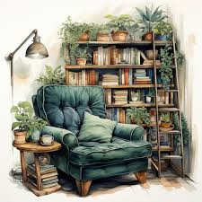

Monthly Picks
Each month, we select a few exciting reads to dive into. Join us as we explore these fantastic titles!
Current Picks
- The Midnight Library by Matt Haig - A thought-provoking tale about choices and regrets.
- Becoming by Michelle Obama - An inspiring memoir from the former First Lady.
- The Vanishing Half by Brit Bennett - A multi-generational family saga exploring identity.